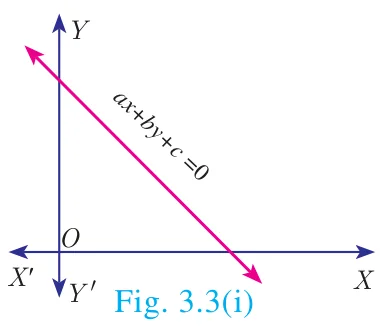
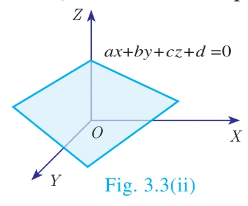
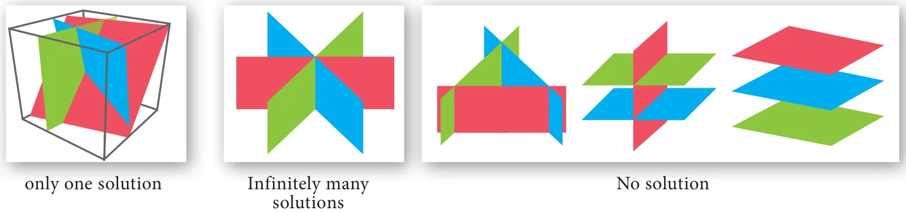

Right from the primitive needs of calculating amount spent for various items in a super market, finding ages of people under specific conditions, finding path of an object when it is thrown upwards at an angle, Algebra plays a vital role in our daily life.
Any point in the space can be determined uniquely by knowing its latitude, longitude and altitude. Hence to locate the position of an object at a particular place situated on the Earth, three satellites are positioned to arrive three equations. Among these three equations, we get two linear equations and one quadratic (second degree) equation. Hence we can solve for the variables latitude, longitude and altitude to uniquely fix the position of any object at a given point of time. This is the basis of Global Positioning System (GPS). Hence the concept of linear equations in three variables is used in GPS systems.
3.2.1 System of Linear Equations in Three Variables
In earlier classes, we have learnt different methods of solving Simultaneous Linear Equations in two variables. Here we shall learn to solve the system of linear equations in three variables namely, \(x\), \(y\) and \(z\). The general form of a linear equation in three variables \(x\), \(y\) and \(z\) is \(ax + by + cz + d = 0\) where \(a, b, c, d\) are real numbers, and atleast one of \(a, b, c\) is non-zero.
Note
- A linear equation in two variables of the form \(ax + by + c = 0\), represents a straight line.
- A linear equation in three variables of the form \(ax + by + cz + d = 0\), represents a plane.


General Form: A system of linear equations in three variables \(x, y, z\) has the general form
\(\begin{aligned} a_1x + b_1y + c_1z + d_1 &= 0 \\ a_2x + b_2y + c_2z + d_2 &= 0 \\ a_3x + b_3y + c_3z + d_3 &= 0 \end{aligned}\)
Each equation in the system represents a plane in three dimensional space and solution of the system of equations is precisely the point of intersection of the three planes defined by the three linear equations of the system. The system may have only one solution, infinitely many solutions or no solution depending on how the planes intersect one another.
The figures presented below illustrate each of these possibilities

Procedure for solving system of linear equations in three variables
- Step 1:
- By taking any two equations from the given three, first multiply by some suitable non-zero constant to make the co-efficient of one variable (either \(x\) or \(y\) or \(z\)) numerically equal.
- Step 2:
- Eliminate one of the variables whose co-efficients are numerically equal from the equations.
- Step 3:
- Eliminate the same variable from another pair.
- Step 4:
- Now we have two equations in two variables.
- Step 5:
- Solve them using any method studied in earlier classes.
- Step 6:
- The remaining variable is then found by substituting in any one of the given equations.
Note
- If you obtain a false equation such as \(0 = 1\), in any of the steps then the system has no solution.
- If you do not obtain a false solution, but obtain an identity, such as \(0 = 0\) then the system has infinitely many solutions.
Example 3.3
Solve the following system of linear equations in three variables \(3x - 2y + z = 2\), \(2x + 3y - z = 5\), \(x + y + z = 6\).
Solution
\(3x - 2y + z = 2 \;\ldots(1) \qquad 2x + 3y - z = 5 \;\ldots(2) \qquad x + y + z = 6 \;\ldots(3)\)
\(\begin{array}{lrl} \text{Adding (1) and (2),} & 3x - 2y + z & = 2 \\ & 2x + 3y - z & = 5 \quad (+) \\ \hline & 5x + y & = 7 \qquad \ldots(4) \\[6pt] \text{Adding (2) and (3),} & 2x + 3y - z & = 5 \\ & x + y + z & = 6 \quad (+) \\ \hline & 3x + 4y & = 11 \qquad \ldots(5) \\[6pt] 4 \times (4) - (5) & 20x + 4y & = 28 \\ & 3x + 4y & = 11 \quad (-) \\ \hline & 17x & = 17 \;\Rightarrow\; x = 1 \end{array}\)
Substituting \(x = 1\) in (4), \(5 + y = 7 \;\Rightarrow\; y = 2\)
Substituting \(x = 1\), \(y = 2\) in (3), \(1 + 2 + z = 6\) we get, \(z = 3\)
Therefore, \(x = 1,\ y = 2,\ z = 3\)
Example 3.4
In an interschool atheletic meet, with total of 24 individual prizes, securing a total of 56 points, a first place secures 5 points, a second place secures 3 points, and a third place secures 1 point. Having as many third place finishers as first and second place finishers, find how many athletes finished in each place.
Solution
Let the number of I, II and III place finishers be \(x\), \(y\) and \(z\) respectively.
Total number of prizes \(= 24\); Total number of points \(= 56\).
Hence, the linear equations in three variables are
\(x + y + z = 24 \;\ldots(1) \qquad 5x + 3y + z = 56 \;\ldots(2) \qquad x + y = z \;\ldots(3)\)
Substituting (3) in (1) we get, \(z + z = 24 \;\Rightarrow\; z = 12\)
\(\therefore\) (3) will be, \(x + y = 12\)
\(\begin{array}{lrl} (2) \Rightarrow & 5x + 3y & = 44 \\ 3 \times (3) \Rightarrow & 3x + 3y & = 36 \quad (-) \\ \hline & 2x & = 8 \quad \text{we get, } x = 4 \end{array}\)
Substituting \(x = 4\), \(z = 12\) in (3) we get, \(y = 12 - 4 = 8\)
Therefore, Number of first place finishers is 4
Number of second place finishers is 8
Number of third place finishers is 12.
Example 3.5
Solve \(x + 2y - z = 5\); \(x - y + z = -2\); \(-5x - 4y + z = -11\)
Solution
\(x + 2y - z = 5 \;\ldots(1) \qquad x - y + z = -2 \;\ldots(2) \qquad -5x - 4y + z = -11 \;\ldots(3)\)
\(\begin{array}{lrl} \text{Adding (1) and (2) we get,} & x + 2y - z & = 5 \\ & x - y + z & = -2 \quad (+) \\ \hline & 2x + y & = 3 \qquad \ldots(4) \\[6pt] \text{Subtracting (2) and (3),} & x - y + z & = -2 \\ & -5x - 4y + z & = -11 \quad (-) \\ \hline & 6x + 3y & = 9 \\[4pt] \text{Dividing by 3} & 2x + y & = 3 \qquad \ldots(5) \\[6pt] \text{Subtracting (4) and (5),} & 2x + y & = 3 \\ & 2x + y & = 3 \\ \hline & 0 & = 0 \end{array}\)
Here we arrive at an identity \(0 = 0\).
Hence the system has an infinite number of solutions.
Example 3.6
Solve \(3x + y - 3z = 1\); \(-2x - y + 2z = 1\); \(-x - y + z = 2\).
Solution
\(3x + y - 3z = 1 \;\ldots(1) \qquad -2x - y + 2z = 1 \;\ldots(2) \qquad -x - y + z = 2 \;\ldots(3)\)
\(\begin{array}{lrl} \text{Adding (1) and (2),} & 3x + y - 3z & = 1 \\ & -2x - y + 2z & = 1 \quad (+) \\ \hline & x - z & = 2 \qquad \ldots(4) \\[6pt] \text{Adding (1) and (3),} & 3x + y - 3z & = 1 \\ & -x - y + z & = 2 \quad (+) \\ \hline & 2x - 2z & = 3 \qquad \ldots(5) \\[6pt] & 2x - 2z & = 3 \\ \text{Now, (5)} - 2 \times (4) \text{ we get,} & 2x - 2z & = 4 \quad (-) \\ \hline & 0 & = -1 \end{array}\)
Here we arrive at a contradiction as \(0 \neq -1\).
This means that the system is inconsistent and has no solution.
Example 3.7
Solve \(\frac{x}{2} - 1 = \frac{y}{6} + 1 = \frac{z}{7} + 2\); \(\frac{y}{3} + \frac{z}{2} = 13\)
Solution
Considering, \(\frac{x}{2} - 1 = \frac{y}{6} + 1\)
\(\frac{x}{2} - \frac{y}{6} = 1 + 1 \;\Rightarrow\; \frac{6x - 2y}{12} = 2 \text{ we get, } 3x - y = 12 \qquad \ldots(1)\)
Considering, \(\frac{x}{2} - 1 = \frac{z}{7} + 2\)
\(\frac{x}{2} - \frac{z}{7} = 1 + 2 \;\Rightarrow\; \frac{7x - 2z}{14} = 3 \text{ we get, } 7x - 2z = 42 \qquad \ldots(2)\)
Also, from \(\frac{y}{3} + \frac{z}{2} = 13 \;\Rightarrow\; \frac{2y + 3z}{6} = 13\) we get, \(2y + 3z = 78 \qquad \ldots(3)\)
Eliminating \(z\) from (2) and (3)
\(\begin{array}{lrl} (2) \times 3 \Rightarrow & 21x - 6z & = 126 \\ (3) \times 2 \Rightarrow & 4y + 6z & = 156 \quad (+) \\ \hline & 21x + 4y & = 282 \\ (1) \times 4 \Rightarrow & 12x - 4y & = 48 \quad (+) \\ \hline & 33x & = 330 \quad \text{so, } x = 10 \end{array}\)
Substituting \(x = 10\) in (1), \(30 - y = 12\) we get, \(y = 18\)
Substituting \(x = 10\) in (2), \(70 - 2z = 42\) then, \(z = 14\)
\(\therefore\ x = 10,\ y = 18,\ z = 14\).
Example 3.8
Solve: \(\frac{1}{2x} + \frac{1}{4y} - \frac{1}{3z} = \frac{1}{4}\); \(\frac{1}{x} = \frac{1}{3y}\); \(\frac{1}{x} - \frac{1}{5y} + \frac{4}{z} = 2\frac{2}{15}\)
Solution
Let \(\frac{1}{x} = p\), \(\frac{1}{y} = q\), \(\frac{1}{z} = r\)
The given equations are written as
\(\begin{aligned} \frac{p}{2} + \frac{q}{4} - \frac{r}{3} &= \frac{1}{4} \\ p &= \frac{q}{3} \\ p - \frac{q}{5} + 4r &= 2\frac{2}{15} = \frac{32}{15} \end{aligned}\)
By simplifying we get,
\(\begin{aligned} 6p + 3q - 4r &= 3 &&\ldots(1) \\ 3p &= q &&\ldots(2) \\ 15p - 3q + 60r &= 32 &&\ldots(3) \end{aligned}\)
Substituting (2) in (1) and (3) we get,
\(\begin{aligned} 15p - 4r &= 3 &&\ldots(4) \\ 6p + 60r &= 32 \text{ reduces to } 3p + 30r = 16 &&\ldots(5) \end{aligned}\)
Solving (4) and (5),
\(\begin{array}{rl} 15p - 4r & = 3 \\ 15p + 150r & = 80 \quad (-) \\ \hline -154r & = -77 \quad \text{we get, } r = \frac{1}{2} \end{array}\)
Substituting \(r = \frac{1}{2}\) in (4) we get, \(15p - 2 = 3 \;\Rightarrow\; p = \frac{1}{3}\)
From (2), \(q = 3p\) we get \(q = 1\)
Therefore, \(x = \frac{1}{p} = 3\), \(y = \frac{1}{q} = 1\), \(z = \frac{1}{r} = 2\). i.e., \(x = 3,\ y = 1,\ z = 2\).
Example 3.9
The sum of thrice the first number, second number and twice the third number is 5. If thrice the second number is subtracted from the sum of first number and thrice the third we get 2. If the third number is subtracted from the sum of twice the first, thrice the second, we get 1. Find the numbers.
Solution
Let the three numbers be \(x, y, z\)
From the given data we get the following equations,
\(3x + y + 2z = 5 \;\ldots(1) \qquad x + 3z - 3y = 2 \;\ldots(2) \qquad 2x + 3y - z = 1 \;\ldots(3)\)
\(\begin{array}{lrl} (1) \times 1 \Rightarrow & 3x + y + 2z & = 5 \\ (2) \times 3 \Rightarrow & 3x - 9y + 9z & = 6 \quad (-) \\ \hline & 10y - 7z & = -1 \qquad \ldots(4) \\[6pt] (1) \times 2 \Rightarrow & 6x + 2y + 4z & = 10 \\ (3) \times 3 \Rightarrow & 6x + 9y - 3z & = 3 \quad (-) \\ \hline & -7y + 7z & = 7 \qquad \ldots(5) \\[6pt] \text{Adding (4) and (5),} & 10y - 7z & = -1 \\ & -7y + 7z & = 7 \\ \hline & 3y & = 6 \quad \Rightarrow y = 2 \end{array}\)
Substituting \(y = 2\) in (5), \(-14 + 7z = 7 \Rightarrow z = 3\)
Substituting \(y = 2\) and \(z = 3\) in (1),
\(3x + 2 + 6 = 5\) we get \(x = -1\)
Therefore, \(x = -1,\ y = 2,\ z = 3\).
Thinking Corner
- The number of possible solutions when solving system of linear equations in three variables are ______.
- If three planes are parallel then the number of possible point(s) of intersection is/are ______.
Progress Check
- For a system of linear equations in three variables the minimum number of equations required to get unique solution is _______.
- A system with _______ will reduce to identity.
- A system with _______ will provide absurd equation.